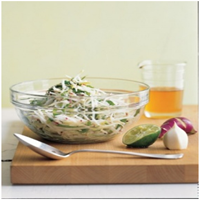

Kohlrabi-and-Turnip Slaw

Ingredients
• 1 pound kohlrabi (about 2 small heads, leaves included)
• 1 medium turnip (about 8 ounces), peeled and quartered
• 3 tablespoons lime juice
• 1 tablespoon peanut oil
• 2 teaspoons honey
• 1 teaspoon toasted sesame oil
• Coarse salt and ground pepper
• 2 scallions, thinly sliced
Directions
1. Separate stems from kohlrabi bulb, trim, and discard tough bottoms of stems.
Half leaves lengthwise then thinly shred crosswise.
Trim root end from bulb and peel away tough outer layer; halve lengthwise.
2. Fit a food processor with a shredding blade (or use a box grater) and shred kohlrabi bulb and turnip.
3. In a medium bowl, whisk together lime juice, peanut oil, honey, and sesame oil; season with salt and pepper.
Add scallions, kohlrabi leaves and bulb, and turnip to bowl; toss to coat. Let stand at least 15 minutes.